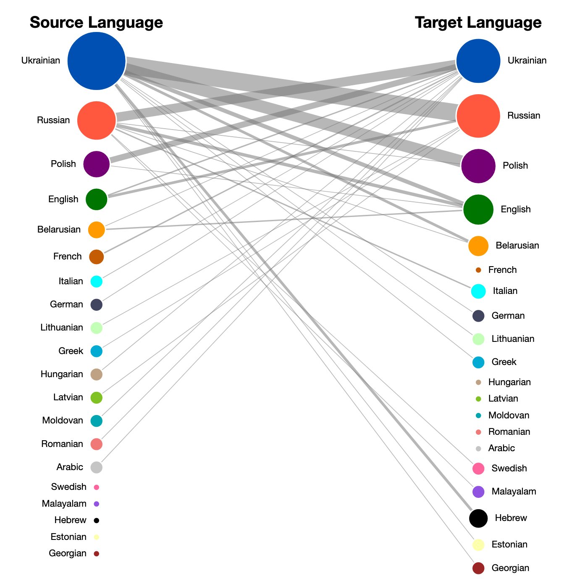

Ukrainian Facebook Poetry
This multi-year digital archival project aims to document and analyze contemporary Ukrainian poetry posted to Facebook. The archive currently contains more than a thousand poems and translations by and of Ukrainian authors. My involvement in the project involved developing the database, creating a webpage to navigate the data, and designing web visualizations to explore the textual archive in new ways.
The archive is currently not open to the public. To apply for access to the archive, please get in contact!

A side-by-side view of the network shown on the homepage (also bottom left). This network maps the source and target languages which appear in the many translations in the archive.
